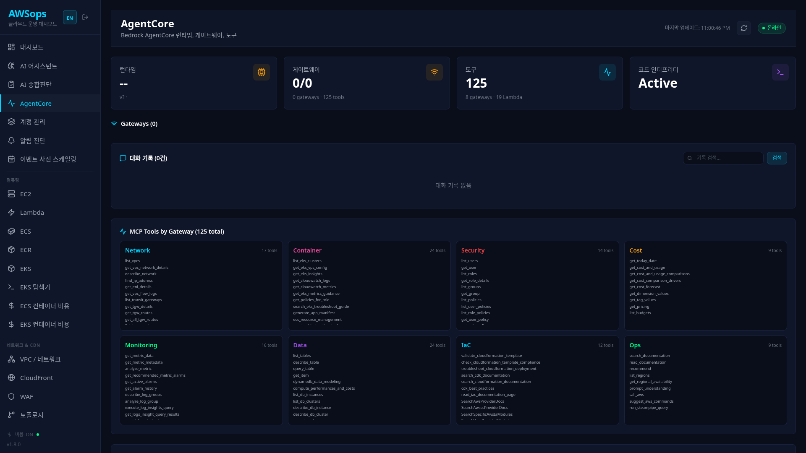
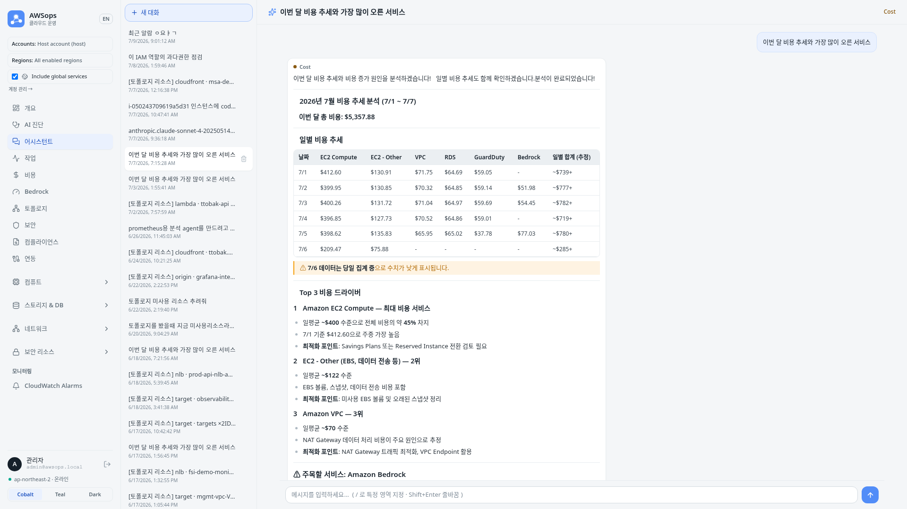
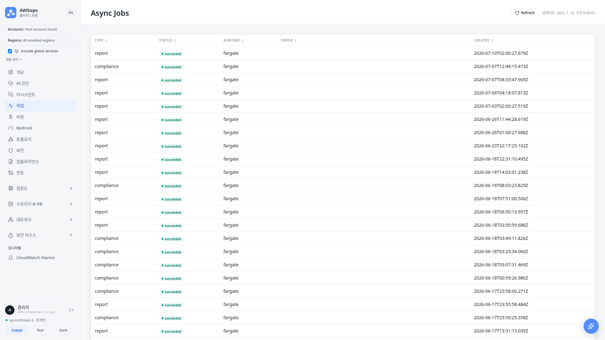

AWSops
AI-Powered AWS Operations Dashboard
Junseok Oh | Solutions Architect | AWS
왜 만들었나 — 5가지 목표
AWSops로 얻는 것: Overview·Topology·Monitoring에 NFM(트래픽 top-contributor·E2E hop path)·Direct Connect(피크 사용률·BGP 라우트·다운 감지)·DNS 쿼리 로그·IP 인벤토리·VPC 엔드포인트·Network Firewall까지 하나의 대시보드에서 읽기 전용으로 확인.
AWSops로 얻는 것: Cost 대시보드 + AgentCore 비용 도구로 읽기 전용 비용 분석과 rightsizing 인사이트를 상시 확인. OpenCost 읽기 전용 패널로 K8s 비용까지 같은 화면에서 본다 — 권고만 제시, 자동 변경은 없음.
AWSops로 얻는 것: 종합진단 리포트(light·mid 9섹션 / deep 16섹션)가 6개 Pillar에 매핑되어 자동 생성되고, 비동기 워커가 만든 결과를 DOCX/PDF로 내보낸다.
AWSops로 얻는 것: Security 페이지가 인벤토리에서 파생한 Findings를 상시 노출하고, Compliance 페이지가 CIS 벤치마크를 실행·이력화한다 — 둘 다 읽기 전용.
AWSops로 얻는 것: AI Assistant/Diagnosis가 CloudWatch·Datasource(Prometheus·Loki·Tempo)·NFM E2E hop path를 자연어로 교차 분석하고, Incident 라이프사이클(로드맵)까지 같은 대시보드 안에서 연결된다.
클라우드 운영의 도전 과제
Console Hopping
- EC2 확인 → CloudWatch → VPC → IAM → Cost Explorer
- 평균 5-7개 콘솔 페이지를 오가며 문제 해결
- 멀티 어카운트 환경에서는 로그인만 10번
데이터 사일로
- CloudWatch 메트릭 ≠ Prometheus 메트릭 ≠ 로그 ≠ 트레이스
- 교차 분석 불가 → 근본 원인 파악 지연
반복적 수작업
- "이 인스턴스 rightsizing 필요한가?"
- "미사용 리소스 정리해야 하는데..."
- 매번 같은 CLI 명령어 반복 실행
보고서 작성 부담
- Well-Architected Review 수작업
- FinOps 리포트 매월 수동 작성
- 2-3일 소요 → 실시간성 부족
AWSops — Single Pane of Glass
worker jobs · chat threads · 진단 리포트 영속 저장
AgentCore Runtime + 섹션 에이전트
ADR-003 하이브리드 라우팅
실제 화면 — Live v2 Dashboard

AWSops — By the Numbers
| 항목 | 내용 | 설명 |
|---|---|---|
| Infra | Terraform MSA | 비공개 엣지 — CloudFront VPC Origin → 내부 ALB → Fargate |
| Compute | ECS Fargate | web thin-BFF + OOM-safe 비동기 워커 티어 (arm64) |
| Data | Aurora Serverless v2 | PostgreSQL 17 영속 상태 + 41종 인벤토리 sync |
| AI Tools | 9 게이트웨이 설계 (160+ 도구) · 30개 슬라이스 전부 LIVE | AgentCore 섹션 에이전트 (모두 read-only; 9개 게이트웨이 전부 READY MCP 타깃) |
| AI Routing | ADR-003 하이브리드 | regex fast-path + Haiku 분류기, 게이트 96.9% |
| Diagnosis | light·mid 9 / deep 16 섹션 | Well-Architected 매핑, DOCX/PDF 내보내기 |
| UX | 3-테마 + 모바일 + 4개 언어 | 반응형 대시보드 + Cmd-K + 한/영/中/日 i18n |
AWSops가 주는 가치
For DevOps / SRE
- Console Hopping 제거 — 한 화면에서 모든 리소스
- 자연어 트러블슈팅 — "VPC Flow Log 분석해줘" (읽기 전용, 스트리밍 챗)
- Topology / EKS 읽기 전용 뷰 — CF→LB→TG→DB 리소스 그래프
- Network 통합 뷰 — NFM(트래픽 top-contributor·E2E hop) · Direct Connect(피크 사용률·BGP) · DNS·IP·VPC 엔드포인트·Network Firewall까지 하나의 대시보드
- Datasource Explore — Prometheus · Loki · Tempo · ClickHouse 교차 조회
- Cmd-K + 4개 언어 — 한/영/中/日 완전 지원, 어디서든 키보드로 이동
For FinOps / Management
- 읽기 전용 비용 분석 — Cost 대시보드 + AgentCore 비용 도구
- Rightsizing 인사이트 — 권고만 제시, 자동 적용 없음
- 종합진단 리포트 — light·mid 9 / deep 16 섹션, Well-Architected 매핑
- DOCX / PDF 내보내기 — 비동기 워커가 생성, 수작업 대체
UX — Cmd-K + 4개 언어

- Cmd-K 커맨드 팔레트 — 콘솔 호핑 없이 키보드로 전체 화면 이동
- 4개 언어 완전 지원 — 한국어 / English / 中文 / 日本語 (2026-07-21 일본어 복원 + 전체 화면 번역 커버리지 점검 완료)
핵심 차별점
외부 AI SaaS API 불필요 — 데이터가 밖으로 안 나감
ADR-005 (FROZEN) / ADR-007 — 설계상 안전
비동기 워커 생성 → DOCX / PDF
Key Takeaways — 5가지 목표, 하나의 대시보드
- ① 가시성 → Overview·Topology·Monitoring + NFM·Direct Connect까지 통합된 Network 6종 메뉴
- ② FinOps → 읽기 전용 비용 분석 + Rightsizing 인사이트 + OpenCost 패널
- ③ Well-Architected → 종합진단 리포트 자동 생성 (light·mid/deep, DOCX/PDF)
- ④ 보안성 → Security Findings + CIS Compliance 벤치마크, 둘 다 읽기 전용
- ⑤ 장애 대응 AI → AI Assistant/Diagnosis가 메트릭·로그·트레이스·NFM 경로를 자연어로 교차 분석
- 핵심 차별점 → In-account Bedrock AI + 읽기 전용 태세 (ADR-005 FROZEN) + 4개 언어 UX
Architecture Deep Dive
AWSops 기술 아키텍처
Terraform 기반 MSA · 비공개 엣지 · 읽기 전용 운영 태세
Overall Architecture — 4-Layer Private Edge
CloudFront-VPCOrigins-Service-SG
awsops-v2-web:3000 (thin-BFF, arm64)
Terraform IaC — Single Root + Feature Flags (1/2)
Foundation
- 단일 루트
terraform/foundation/ - Partial S3 backend —
awsops-v2-tfstate,use_lockfile(DynamoDB 없음) - TF ≥ 1.15, provider ~>6.0, arm64
- Saved-tfplan 규율 — 공유 인프라는
apply tfplan(no-auto-approve)
LIVE 오늘: workers · steampipe · agentcore · integrations · ai_cost_tracking · diagnosis_schedule · diagnosis_notify · eks_auto_register · hybrid_routing
Feature Flags (~17개, 전부 default-off = $0)
agentcore_enabled·workers_enabled·steampipe_enabledhybrid_routing_enabled·diagnosis_schedule_enabled·diagnosis_notify_enabledincident_lifecycle_enabled·k8sgpt_enabled·rca_writeback_enabledeks_auto_register_enabled·ai_cost_tracking_enabled·multi_route_synthesis_enabledremediation_enabled— ADR-005 FROZEN, do-not-enable
Terraform IaC — Key .tf Files (2/2)
Core Layers
| 파일 | 역할 |
|---|---|
network.tf | VPC 신규/재사용 |
edge.tf | CloudFront + VPC Origin + ALB |
auth.tf | Cognito + Lambda@Edge |
data.tf | Aurora + schema |
workload.tf | ECS web service |
ecr.tf | dual-tier ECR |
ai.tf | AgentCore + SSM |
workers.tf | SQS + SFN + Lambda |
Gated Subsystems
| 파일 | 역할 |
|---|---|
eks.tf | Access Entry + AdminView |
steampipe.tf | 인벤토리 sync (steampipe_enabled) |
notify.tf | 진단 알림 SNS (diagnosis_notify_enabled) |
incidents.tf | 인시던트 webhook (incident_lifecycle_enabled) |
k8sgpt.tf | K8sGPT 예산/리소스 (k8sgpt_enabled) |
writeback.tf | RCA write-back (rca_writeback_enabled) |
remediation.tf | 리메디에이션 substrate (FROZEN) |
secret-rotation.tf | 자기치유 재배포 (ADR-015) |
Compute & Web — Thin-BFF on Fargate
Next.js 14 Standalone (arm64)
- 루트 경로 서빙 — basePath 없음, fetch는
/api/* - Thin-BFF 원칙 — 무겁고·길고·OOM 위험 작업은 직접 실행 금지
- 무거운 작업은 워커 큐로 enqueue — 범용
POST /api/jobs는noop계열만,report/compliance등 도메인 job은 소유권 검사하는 전용 라우트(ADR-009)
Routes
/api/health— 공개 헬스체크/api/stream— SSE 스트리밍/api/db— Aurora ping/api/jobs(+/[id]) — 비동기 작업
/api/health. 불일치 시 circuit breaker 루프.Data Layer — Aurora Serverless v2
Aurora (PostgreSQL 17.9)
- 0.5–4 ACU, KMS CMK, RDS-관리 master secret
- 앱 접근 = node-pg (
web/lib/db.ts) - ADR-030 스키마 (v9 baseline) +
worker_jobs· chat threads · diagnosis - 새 테이블 = ULID 마이그레이션 (
migrations/)_*.sql
Steampipe = 인벤토리 sync ONLY
steampipe_enabled)41종 리소스 타입 동기화
fan-out sync · registry-driven nav
AI Engine — Models & Config (1/2)
AgentCore Runtime (Strands,
agent/agent.py)+ Memory + Code Interpreter
/ops/awsops-v2/agentcore/*provision.py 기록 → BFF 런타임 read

AI Engine — 9 Section Gateways (2/2)
observability로 별칭. 30슬라이스 전부 LIVE(9개 게이트웨이 전부 READY MCP 타깃). 16개 챗 키는 전부 등록되어 있지만, 그중 aws-data + 콜렉터 6종(7개)은 steampipeAvailable()이 ADR-001/010에 따라 항상 false를 반환해 하드 비활성 — 선택하면 fail-open으로 ops에 위임됨Hybrid Routing & Streaming Chat — ADR-003
Routing Pipeline
- Regex fast-path — 명백한 질의는 즉시 라우팅
- Haiku 4.5 classifier — 애매하면 분류
- Prompt caching — 약 59% 캐시 히트
- → 섹션 라우팅 → SSE 스트리밍 + 도구 표시
Gate Result
- 69.2% → 96.9% (+27.7pp)
- LIVE (hybrid_routing_enabled = true)
Chat UX
📄
/assistant full page📝 react-markdown 렌더링
💾 Aurora-backed thread 영속
📚 Claude-app 스타일 사이드바

AI Diagnosis — Flagship, Read-Only
Async Worker Tier — OOM-Safe Backbone (1/2)
worker_jobs (queued) + SQS
$.runtime짧은 작업
긴 작업 / OOM
Async Worker Tier — 잡 종류 (2/2)
잡 종류 (2026-06-18 이후 증가)
- schedule_dispatcher — 시간별 EventBridge →
report_schedules스캔 → 진단 잡 enqueue (diagnosis_schedule_enabled, LIVE) - diagnosis_digest (workers.tf) — 리포트별 이메일 대신 배치 SNS 다이제스트 (
workers_enabled && diagnosis_notify_enabled게이트로 이미 배포됨; ADR-13이 명시적으로 승인한 건 스케줄 진단 요약뿐이라 수동 실행분까지 배치하는 현재 구현은 ADR 범위를 넘어섬 — 후속 ADR 정리 필요) - compliance (Powerpipe) — CIS 벤치마크 Fargate 잡 (
steampipe_enabled)

Datasources & Topology
Datasource Platform (read-only)
- 커넥터: ClickHouse · Prometheus · Loki · Tempo · Mimir + Jaeger · Dynatrace · Datadog (8종)
- connector Lambda + Aurora schema cache
- chat injection — AI가 데이터소스 교차 조회
/datasourcesExplore 페이지 + NL→query
Topology
/topology/resource/[id] 상세 패널EKS — Read-Only In-Cluster
3 Auth Modes (Aurora eks_registrations.auth)
- task-role presigned STS —
configure.mjs멀티선택 →eks.tfAccess Entry + AmazonEKSAdminViewPolicy(클러스터 스코프, View 아님 — View는 cluster-scoped list 403) - sa-token / assume-role — 클러스터별 Aurora 등록, terraform 온보딩 불필요
- Auto-Register (LIVE) — EventBridge(CloudTrail) → Lambda →
eks_registrations(eks_auto_register_enabled)
Read-Only Query
- nodes / pods / deployments / services (+ explorer kinds)
- BFF-direct (워커 거치지 않음)
- core discovery(
ListClusters/DescribeCluster)는 ungated·always-on(workload.tf) —/api/eks·/api/overview·/api/cost는 온보딩 flag와 무관하게 항상 동작
✓ CLI guide
✓ 클러스터별 워크로드 뷰
Multi-Account — STS AssumeRole Fan-Out (ADR-011)
Registry + Assume
- Aurora accounts 레지스트리 — 호스트 계정은 lazy seed
- 대상 계정
AWSopsReadOnlyRole을 host task role이 STS AssumeRole - ExternalId — 1st-party(trust policy가 task-role ARN 핀) = 선택, 3rd-party/와일드카드 = 필수(confused-deputy 방어)
- 글로벌 셀렉터: 단일 계정 스코프 /
__all__= 전 계정 fan-out
Safety
- host self-assume 가드 — target == host면
get_role_arn()이None반환 → host 실행 role 직접 사용(v1 전용 role을 host에서 self-assume → AccessDenied 오진 방지) - read-only 한정 — 대상 계정 변경 작업 없음(ADR-005 동결과 정합)
/accountsadmin UI + CFN으로 대상 계정에 read-only role 배포(코드 변경 없음)
Auth & Security
Cognito + Lambda@Edge
- us-east-1, py3.12, viewer-request
- RS256 JWKS 서명 검증 (iss/aud/token_use)
- OAuth
state+ PKCE public client
Login (ADR-002)
- Primary = 자체
/login폼 - BFF
POST /api/auth/login→ 무서명 공개InitiateAuth(USER_PASSWORD_AUTH)→awsops_token(id_token 12h) - Hosted UI PKCE = dark fallback, signout = 쿠키 삭제
Deployment — Makefile Flow
make configure
— TUI → terraform.tfvars + backend.hcl
terraform init / plan -out tfplan
→ 컨트롤러가 apply tfplan (공유 인프라)
make deploy
— migrate-first → arm64 build → ECR → ECS rolling → wait stable → smoke /api/health
make agentcore / make workers
— 각 flag로 apply 후 실행
Posture & Differentiators
AWS-리소스 변경 + 자율 — 새 명시적 결정 전까지 동결(영구 아님)
SSRF · Secrets · DLP · human-gate 하
ecs:UpdateService force-new-deployment(재시작)만, Aurora secret 회전 이벤트 트리거 한정, IAM 1 ARN, secret-id fail-closed, default-off. 나머지 ADR-005 전부는 그대로 동결.
Key Takeaways — Architecture
- Terraform MSA on private edge — CloudFront VPC Origin → 내부 ALB → Fargate, 공개 ALB 없음
- Aurora 영속 상태 — PostgreSQL 17.9 (Steampipe = flag-gated 인벤토리 sync일 뿐)
- AgentCore 섹션 에이전트 — 9 게이트웨이 · ~160 read-only 도구(30슬라이스 전부 LIVE)로 라이브 AWS 읽기
- ADR-003 하이브리드 라우팅 + ADR-011 멀티 계정 — regex + Haiku 분류기 + caching, STS AssumeRole fan-out
- OOM-safe 비동기 워커 티어 — SQS + SFN + Lambda/Fargate, 진단·스케줄·알림·컴플라이언스 처리
- 읽기 전용 동결 태세 — AWS 변경·자율 동결(ADR-005, 새 결정 전까지) + ADR-015 예외 1건, in-account Bedrock
AWSops
AI-Powered AWS Operations Dashboard
감사합니다 · Questions?
Demo & Diagnosis Report
실전 시나리오와 종합진단
AI Assistant Demo (1/2) — 라우팅 & 스트리밍
🔍 하이브리드 라우팅 (regex + Haiku)...
Gateway: cost · 프롬프트 캐싱 hit
📊 AgentCore 섹션 에이전트 · 라이브 read-only 조회...
MCP Tools ✅ Cost Explorer ✅ EKS Metrics ✅
🤖 Bedrock 분석 · SSE 스트리밍...
AI Assistant Demo (2/2) — 실제 응답 화면

답변과 함께 라우트·도구 사용 내역 표시 · 대화는 Aurora thread로 영속 저장 (resizable drawer와
/assistant전체 화면이 같은 thread 공유)
Scenario 1: Cost Analysis & Rightsizing (1/2)
사용자 질문
"비용 개선점 찾아줘"
동작 흐름 (read-only)
- cost 섹션 에이전트 — Cost Explorer / Forecast 조회
- Cost 대시보드 — 서비스별 비용·추이 시각화
- EKS 메트릭 — request 대비 실사용량 (read-only)
- regex + Haiku 라우팅 → cost gateway
분석 결과 예시 (권장만)
- "payment Pod: CPU request 500m, 실사용 50m → 90% 과할당 (rightsizing 권장)"
- "frontend Deployment: Memory limit 2Gi, 사용량 200Mi → 다운사이징 권장"
- "Node 3대 중 2대 활용률 15% 미만 → 통합 검토"
- "예상 월 절감 $1,200 — 권장사항"
Read-Only 원칙
권장사항만 제시 · 자동 적용 없음 (mutating 설치 버튼은 ADR-005로 동결 — do-not-enable)
Scenario 1: Cost Analysis & Rightsizing (2/2) — Cost 대시보드

서비스별 비용·추이 시각화 → rightsizing 후보 도출 · 권장만 제시, 자동 적용 없음
Scenario 2: Inventory & Idle Review (1/2)
사용자 흐름
/inventory/[type]페이지 → AgentCore 질의
Inventory 플랫폼
- 41종 resource types —
/inventory/[type]제네릭 페이지 - flag-gated Steampipe sync (warm Fargate) → Aurora 적재
- registry 기반 내비게이션 · fan-out sync
- 페이지별 mini-dashboard (KPI / donut / filters)
점검 예시 (read-only)
- "미연결 EBS 볼륨 · 미사용 Elastic IP 후보 식별"
- "오래된 스냅샷 · 중지된 EC2 검토"
- "ENI 참조 없는 Security Group"
- AgentCore 라이브 조회로 현황 보강
라이브 vs 인벤토리
Steampipe = 인벤토리 sync 전용 (Aurora 적재) 라이브 조회는 AgentCore MCP 도구가 담당
Scenario 2: Inventory & Idle Review (2/2) — 인벤토리 화면

페이지별 mini-dashboard에서 후보를 좁히고 → AgentCore 라이브 조회로 현황 보강
Scenario 3: Topology & Dependencies (1/2)
Flow + Infra 그래프 · /topology/resource/[id] 상세 · blast radius 진단
- 계정별 스코프 토폴로지 — 멀티 계정 그래프를 계정 단위로 필터링해 조회
- VPC Resource Map — VPC 상세 패널에서 여는 풀스크린 VPC→Subnet→RouteTable→IGW/NAT/TGW 맵
Scenario 3: Topology & Dependencies (2/2) — 그래프 화면

노드 클릭 →
/topology/resource/[id]상세 · blast radius(영향 범위) 추적 — 사람이 그래프를 보며 진단하는 read-only 방식
AI Diagnosis Report (1/2) — 16 섹션 진행
AI 종합진단 리포트 (deep · 16 sections)
AI Diagnosis Report (2/2) — 리포트 화면

자동 제목 · 태그 · 소프트 삭제 지원 — 리포트 목록과 상세 화면에서 열람
Report Export & Lifecycle
워커 기반 Export
- DOCX — python-docx
- PDF — chromium / playwright 렌더
- Noto CJK 폰트 (한글 깨짐 방지)
- 워커 티어에서 생성 · 실패 격리
저장 / 다운로드
- S3 →
diagnosis/{id}.docx·diagnosis/{id}.pdf - BFF 프록시 다운로드 라우트 + UI 메뉴
- 생성 일시 KST 표기
리포트 라이프사이클
- 자동 제목 (워커 LLM 1회, 격리)
- 태그 자동 제안 + 수동 편집
- 제목 수정 · 소프트 삭제 (
deleted_at) - 읽기 경로 =
deleted_at IS NULL - PATCH / DELETE = fail-closed (owner | admin)
XSS 안전
title / tags는 React-escape 렌더 (raw HTML 주입 없음)
Scheduled Diagnosis & Notification Digest
스케줄 진단 (diagnosis_schedule_enabled)
report_schedules테이블 — 주간 / 격주 / 월간 (next_run_at기준)- hourly
schedule_dispatcher— 스캔 후reportjob enqueue - v1
report-scheduler.ts패턴 승계
알림 다이제스트 (병합·배포 완료)
diagnosis_digest.py—notified_at IS NULL리포트를 ~15분 배치로 묶어 SNS 1건 발송 (workers_enabled && diagnosis_notify_enabled게이트로 이미 main 병합·라이브 배포됨; ADR-13이 승인한 건 스케줄 요약뿐이라 수동 실행분까지 묶는 현재 범위는 ADR 정리 대상)- 완료 즉시 개별 발송(per-report) 방식 폐기 — 폭주 방지(하루 44건 → 1건)
- PII 스크러빙 — Bedrock 호출 전 ARN·계정ID·이메일·IP·액세스키를 결정론적으로 마스킹 (현재 라이브)
Datasources — 8종 Read-Only 커넥터 (1/2)
Explore (/datasources)
- read-only 커넥터 플랫폼 (8종)
- ClickHouse · Prometheus · Loki · Tempo · Mimir
- + Jaeger · Dynatrace · Datadog (신규 3종)
- 커넥터 Lambda + Aurora schema cache
기능
- NL → query 변환 + 챗 주입(injection)
- 스키마는 Aurora에 캐시되어 빠른 재조회
- 전 커넥터 READ만 — 변경·자율 없음
Datasources (2/2) — Explore 화면

NL → query 변환 + 챗 주입 · 스키마는 Aurora 캐시 · 전 커넥터 READ만
EKS — 전체 메뉴 패밀리 (read-only) (1/2)
조회 화면
- fleet-wide nodes / pods / deployments / services 개별 페이지
- explorer — K9s 스타일, 11개 리소스 종류 탭
- container cost 뷰
인증 & 온보딩
- 3가지 클러스터 인증 모드: sa-token / assume-role / task-role(Access Entry)
- task role Access Entry + AmazonEKSAdminViewPolicy
- LIVE 즉시 조회 등록 — Access Entry 보유 클러스터는 바로 등록
EKS (2/2) — fleet 조회 & 클러스터 상세


Feature Tour: Per-Service 진단 계층
표면적으로는 콘솔이지만, 각 서비스마다 왜 문제인지 설명하는 진단 가이드가 붙어있다.
- 11개 AWS 서비스에 전용 진단 계층 — RDS · DynamoDB · ElastiCache · MSK · OpenSearch · ALB/NLB · S3/EBS · EC2 · Lambda
- 접기/펼치기 "owner 가이드" — 지표를 어떻게 읽어야 하는지 서비스별로 설명
- range-picker(구간 선택) + 정렬 가능한 메트릭 테이블
- 데이터 기반
GuideSpec— 서비스 추가는 컴포넌트가 아니라 데이터 추가
Feature Tour: 멀티 계정 Security & Compliance
ADR-011 — STS AssumeRole read-only fan-out (ExternalId: 1st-party 옵션 · 3rd-party 필수) · 계정별 보안/컴플라이언스 스코핑 · CVE Severity Distribution donut(ECR 스캔 집계).
Security Findings Pipeline

Compliance Benchmark Flow

Deployment
Conclusion & Differentiators
AWSops가 제공하는 것
- Read-only AWS 운영 대시보드 + AI 진단
- 자연어 챗 → 라이브 read-only 조회 (AgentCore MCP)
- 종합진단 리포트 (light·mid 9 / deep 16 · Well-Architected)
- 인벤토리 · 토폴로지 · Datasources · EKS
핵심 차별점
- in-account Bedrock (외부 AI SaaS API 없음)
- private edge (공개 ALB 없음, CloudFront VPC Origin)
- OOM-safe 비동기 워커 티어
Read-Only 자세 (ADR-005/007)
- AWS-리소스 변경 + 자율 = 동결 (ADR-005, do-not-enable)
- 외부 관측성 READ 허용
- 외부 기록 / 티켓 / 메시지 WRITE 는 거버넌스 하 허용
- SSRF · Secrets · DLP · human-gate · flag-OFF
- 변경되는 것은 DATA, AWS 리소스가 아님
시작하기
make configure→ Terraform applymake deploy- Cognito 사용자 추가 ·
/login - 어시스턴트에서 질문 시작
Thank You
AWSops — AI-Powered AWS Operations Dashboard
Junseok Oh | Solutions Architect | AWS